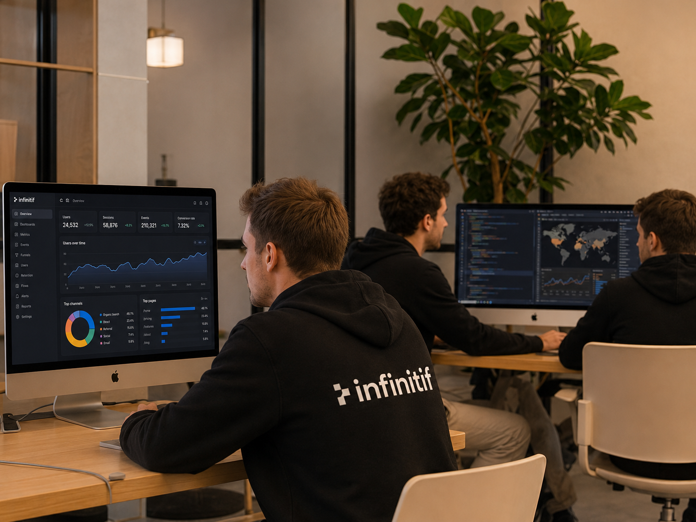

Une équipe singulière, des engagements incarnés.
Au cœur de l'action, une équipe senior de plus de 5 ans d'expérience, présente jusqu'à l'atterrissage, portée par une gouvernance indépendante, des labels reconnus et des engagements concrets, vivants, jamais figés.
Une équipe senior, engagée, présente jusqu'à l'atterrissage.
Des profils hybrides, tous avec plus de 5 ans d'expérience, qui partagent une posture commune : exigence, écoute, clarté, sens du réel.
Du métier, pas seulement du conseil.
Nous embauchons des profils qui ont déjà tenu un poste opérationnel : DSI, gestionnaire, chef de projet, data scientist. Le diplôme compte ; l'expérience compte plus. Tous nos consultants ont plus de 5 ans d'expérience.
Le partner qui démarre est celui qui termine.
Pas de signature lointaine qui disparaît après le kick-off. Le consultant qui vous présente le travail est celui qui l'a fait. C'est tout.
Exigence, écoute, clarté.
Dire ce que nous pensons, écouter ce qui ne se dit pas, rester clair quand la complexité s'invite. Une posture qui se vérifie en mission.
Sur le métier, pas sur le pédigrée.
Nous vérifions que les gens écoutent. C'est non négociable. Diversité des parcours, hybridation des compétences, ouverture aux reconversions.


Une gouvernance engagée, garante de notre indépendance.
Le capital d'Infinitif est détenu exclusivement par les associés opérationnels. Une indépendance qui n'est pas un slogan. C'est une condition de notre liberté de parole et de la qualité du conseil que nous donnons.
Le partnership n'est pas qu'une structure juridique : c'est une communauté de confiance et d'engagement. Principe « une personne, une voix ». Ce qui se décide engage celles et ceux qui le portent.
Capital détenu par les associés opérationnels.
Pas d'investisseur tiers. Une cohérence entre la propriété et la pratique du métier.
Une gouvernance partagée.
Les associés portent le projet collectivement. Les décisions structurantes engagent celles et ceux qui les votent.
Transparence sur les rémunérations et les chiffres du cabinet.
Chez Infinitif, la transparence n'est pas un argument commercial. C'est un principe de fonctionnement. Nous partageons avec nos équipes les chiffres du cabinet, la grille de rémunération, les indicateurs de performance et la trajectoire financière.
Cette transparence est aussi celle que nous devons à nos clients : sur les coûts, sur les arbitrages, sur la trajectoire de la mission. Un cabinet qui n'a rien à cacher peut tout dire. C'est notre standard.
Des labels qui attestent nos pratiques.
Labels obtenus dans le cadre du référencement VYV. Des engagements vérifiés, pas des déclarations d'intention.
Verbatim du référencement VYV — côté consultant : à compléter avec les retours réels du processus de référencement.
Verbatim du référencement VYV — côté client : à compléter avec les retours réels du processus de référencement.
Gouvernance, sociale, responsable : une exigence qui structure notre action.
La RSE n'est pas une option que nous vendons. C'est une grille de lecture qui imprègne chaque mission. Un engagement vivant, jamais figé.
Une responsabilité sociale incarnée.
Diversité des profils et des parcours, recrutement inclusif, mentorat, espaces d'expression. La responsabilité sociale se mesure dans le quotidien : conditions de travail, équilibre, respect des engagements pris.
Une conscience environnementale en actes.
Sobriété opérationnelle, train par défaut, infrastructure cloud raisonnée, zéro impression sur les missions. Pas de greenwashing. Des choix vérifiables, intégrés à la manière dont nous travaillons.
Une gouvernance engagée, transparente.
Indépendance capitalistique, gouvernance par les associés opérationnels, transparence sur la trajectoire et les rémunérations. Une gouvernance qui rend des comptes, d'abord à elle-même.
Un engagement vivant, jamais figé.
Pas de charte affichée pour décor. Nos engagements sont relus, ajustés, incarnés par les équipes pour rester pertinents face aux enjeux qui évoluent.
Réduire les biais, structurer l'égalité des chances.
Une démarche mesurée, sans affirmations creuses. Des pratiques qui visent à structurer des conditions plus équitables, pas à proclamer la fin des biais.
Des profils, parcours et points de vue.
La diversité est une condition de qualité du conseil. Elle se construit dans le recrutement, la composition des équipes et l'écoute des différences.
Élargir les chemins d'accès.
Recrutement structuré pour réduire les biais, parcours diversifiés, ouverture aux reconversions et aux profils non linéaires.
Des espaces pour grandir.
Mentorat, espaces d'expression, sensibilisation continue. Favoriser l'égalité des chances par des pratiques concrètes, pas par des slogans.
Vous voulez échanger avec l'équipe ?
Nous répondons personnellement à chaque message. Décrivez votre sujet en deux phrases, nous revenons vite.